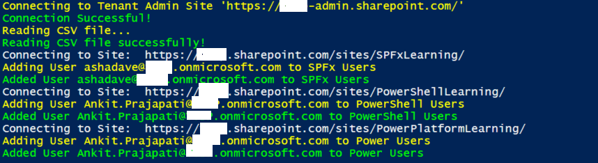

Add Bulk Users to SharePoint Site Groups
Summary
This sample shows how to add bulk users to SharePoint site groups from CSV.
Bulk Users CSV
| SiteURL | GroupName | Users |
|---|---|---|
| https://domain.sharepoint.com/sites/SPFxLearning/ | SPFx Users | user2@domain.onmicrosoft.com |
| https://domain.sharepoint.com/sites/PowerShellLearning/ | PowerShell Users | chandani@domain.onmicrosoft.com |
| https://domain.sharepoint.com/sites/PowerPlatformLearning/ | Power Users | chandani@domain.onmicrosoft.com |
You can download input CSV reference file at here.

Implementation
- Open Windows PowerShell ISE
- Create a new file and write a script
- Now we will see all the steps which are required to achieve the solution:
- Create a function to read a CSV file and store it in a global variable.
- Create a function to connect the M365 admin site.
- Create a function to add users to a group, in this first we will be looping all elements and connecting to the particular site. After that, we will check if the current user exists in the current group. If not exists then we will add it.
$AdminSiteURL = "https://domain-admin.sharepoint.com/"
$Username = "chandani@domain.onmicrosoft.com"
$Password = "********"
$SecureStringPwd = $password | ConvertTo-SecureString -AsPlainText -Force
$Creds = New-Object System.Management.Automation.PSCredential -ArgumentList $username, $secureStringPwd
$CSVPath = "E:\Contribution\PnP-Scripts\bulk-add-users-to-group\SP-Usres.csv"
$global:CSVData = @()
Function Login() {
[cmdletbinding()]
param([parameter(Mandatory = $true, ValueFromPipeline = $true)] $Creds)
Write-Host "Connecting to Tenant Admin Site '$($AdminSiteURL)'" -ForegroundColor Yellow
Connect-PnPOnline -Url $AdminSiteURL -Credentials $Creds
Write-Host "Connection Successful!" -ForegroundColor Green
ReadCSVFile
}
Function ReadCSVFile() {
Write-Host "Reading CSV file..." -ForegroundColor Yellow
$global:CSVData = Import-Csv $CSVPath
Write-Host "Reading CSV file successfully!" -ForegroundColor Green
AddUsersToGroups
}
Function AddUsersToGroups() {
ForEach ($CurrentItem in $CSVData) {
Try {
#Connect to SharePoint Online Site
Write-host "Connecting to Site: "$CurrentItem.SiteURL
Connect-PnPOnline -Url $CurrentItem.SiteURL -Credentials $Creds
#Get the group
$Group = Get-PnPGroup -Identity $CurrentItem.GroupName
#Get group members
$GroupMembers = Get-PnPGroupMembers -Identity $Group | select Email
#Check if user is exists in a group or not
$IsUserExists = $GroupMembers -match $CurrentItem.Users
if ($IsUserExists.Length) {
Write-Host "User $($CurrentItem.Users) is already exists in $($Group.Title)" -ForegroundColor Yellow
}
else {
Write-Host "Adding User $($CurrentItem.Users) to $($Group.Title)" -ForegroundColor Yellow
Add-PnPGroupMember -LoginName $CurrentItem.Users -Identity $Group
Write-host "Added User $($CurrentItem.Users) to $($Group.Title)" -ForegroundColor Green
}
}
Catch {
write-host "Error Adding User to Group:" $_.Exception.Message -ForegroundColor Red
}
}
}
Function StartProcessing {
Login($Creds);
}
StartProcessing
Check out the PnP PowerShell to learn more at: https://aka.ms/pnp/powershell
The way you login into PnP PowerShell or CLI for Microsoft 365 (effective from 9th September 2024) has changed please read PnP Management Shell EntraID app is deleted : what should I do ?
Contributors
| Author(s) |
|---|
| Chandani Prajapati |
| Ganesh Sanap |
Disclaimer
THESE SAMPLES ARE PROVIDED AS IS WITHOUT WARRANTY OF ANY KIND, EITHER EXPRESS OR IMPLIED, INCLUDING ANY IMPLIED WARRANTIES OF FITNESS FOR A PARTICULAR PURPOSE, MERCHANTABILITY, OR NON-INFRINGEMENT.